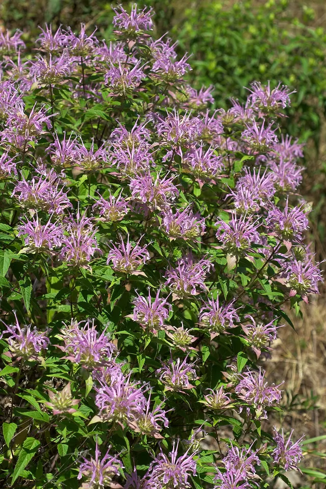

Wild bergamot
Wild bergamot is a edible flower or tea you can forage from June to August in Northeast, Southeast, Midwest, Great Plains and Rocky Mountains. Square-stemmed mint with shaggy lavender pompom flowers and an oregano-thyme scent.

When is wild bergamot in season in the United States?
Wild bergamot is usually in season June to August. Timing shifts with weather, latitude and altitude.
Where does wild bergamot grow in the United States?
Wild bergamot grows in Alabama, Arkansas, Colorado, Connecticut, Delaware, District of Columbia, Florida, Georgia, Idaho, Illinois, Indiana, Iowa, Kansas, Kentucky, Louisiana, Maine, Maryland, Massachusetts, Michigan, Minnesota, Mississippi, Missouri, Montana, Nebraska, New Hampshire, New Jersey, New York, North Carolina, North Dakota, Ohio, Oklahoma, Pennsylvania, Rhode Island, South Carolina, South Dakota, Tennessee, Texas, Utah, Vermont, Virginia, West Virginia, Wisconsin, Wyoming. Regions: Northeast, Southeast, Midwest, Great Plains, Rocky Mountains.
How do you recognise wild bergamot?
Square-stemmed mint with shaggy lavender pompom flowers and an oregano-thyme scent.
How do you harvest wild bergamot?
Pick flowers on a dry, sunny morning once the dew has gone, when the scent is strongest. Take a few heads from each plant so it can still set fruit.
How do you eat wild bergamot?
Tea, or as a wild oregano.
How do you store wild bergamot?
Dry leaves and flowers.